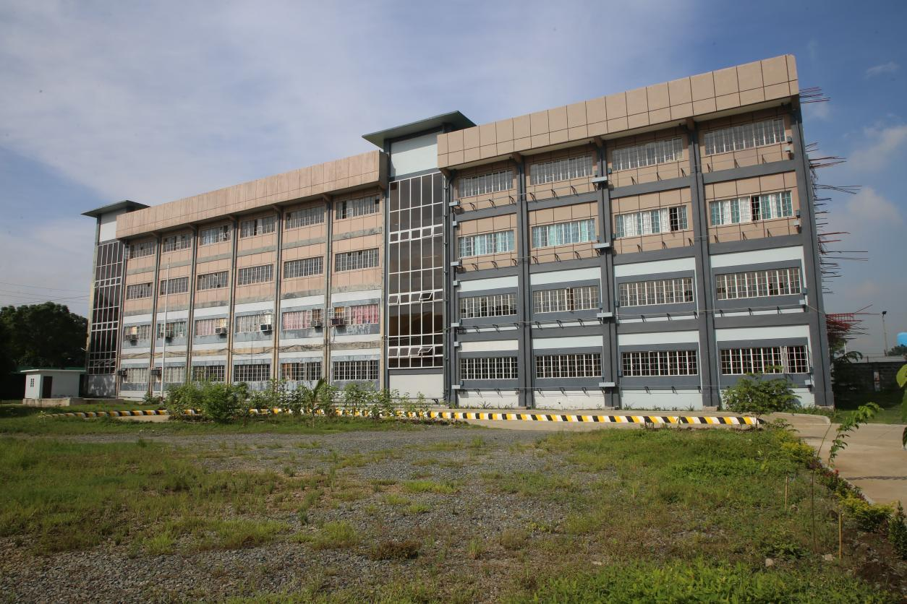
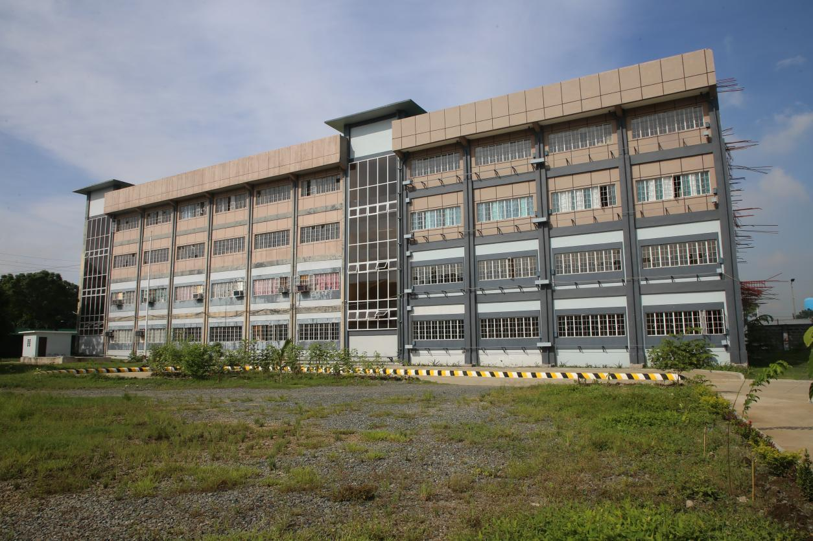

PUP Santa Rosa History
The Polytechnic University of the Philippines – Santa Rosa is blessed to be in a city with more than 200 years of history, the Lion City of the South, officially known as Santa Rosa City in the province of Laguna. Santa Rosa was named after its patron Saint Rose of Lima of Peru, when it was initially established as municipality in January 18, 1792. Santa Rosa City has witnessed and stood the test of times from the Spanish Period to the present day political era. It has also proven its resilience and generosity during the Covid 19 pandemic. And during the growth of the city PUP Santa Rosa was born with the goal of providing quality public education to mold the mind , heart and hands of the young people of Santa Rosa.
On February 21, 2003 Municipal Mayor, Hon. Leon C. Arcillas signed a memorandum of agreement with Polytechnic University of the Philippines through University President, Dr. Ofelia M. Carague. This historic occasion was the beginning of quality public tertiary education in Santa Rosa.
Initially, the Campus offered courses in Information Technology (BSIT), Education (BSE), and Entrepreneurial Management (BSEM) at the undergraduate level. For graduate studies the Master in Educational Management (MEM) Open University System was introduced to cater to the needs of those teachers in elementary and secondary schools in the City of Santa Rosa and nearby towns who would like to pursue higher education.
Resolution No. 54-2004 of the Santa Rosa Sangguniang Bayan dated April 21, 2004 gave provisions for the offering of additional courses in Associate in Health Science Education (AHSE) leading to Bachelor of Science in Nursing, Bachelor of Science in Accountancy (BSA) Bachelor of Science in Electronics & Communication Engineering (BSECE). Because of the changing demands for jobs and preferences of students, more feasible and relevant programs replaced the offerings of some programs.
Resolution No. 27-2008 of the Santa Rosa Sangguniang Panglungsod dated February 11, 2008 approving the opening of new courses- Bachelor of Science in Industrial Engineering (BSIE), Bachelor of Science in Business Administration- Marketing Management and Master in Public Administration.
Resolution No.87-2015 of the Santa Rosa Sangguniang Panglungsod dated April 30, 2015 approving the opening of new courses- Bachelor in Business Teacher Education Major in Business Technology and Livelihood Education (BTE) that will be a response to the needs of the community.
Resolution No.0066-2018 of the Santa Rosa Sangguniang Panglungsod dated April 23, 2018 approving the opening of new courses- Bachelor of Secondary Education Major in Filipino.
Resolution No.0120-2020 of the Santa Rosa Sangguniang Panglungsod dated November 25, 2020 approving the opening of new courses- Bachelor of Science in Management Accounting.
Pioneer employees (2003-2020) were Campus Director Charito A . Montemayor, Admission and Registration Head Asst Prof Teresita Z. Bautista and Administrative Personnel Leny V. Salmingo.
2003 - 2007
OLD BUILDING (FIRST) Near Community Hospital Rizal Boulevard, Brgy. Market Area City of Santa Rosa, Laguna (2003-2007)

2008 - 2020
In 2008, PUP-Santa Rosa transferred to Pabahay due to the increasing number of students.
PABAHAY CAMPUS Tiongco Subdivision,Brgy. Tagapo, City of Santa Rosa, Laguna (2008-2020)


The PUP-Santa Rosa has definitely grown from its humble beginnings, just like its mother City.
At present, the Campus offers the following degree programs:
|
|
The PUP Santa Rosa is proud to have above average passing rate in board exams, for passing the various compliance processes to ensure the quality of education in the University. There are many things yet to be done but with the unwavering support from the Honorable Members of the Santa Rosa City Council headed by our beloved City Mayor, Hon. Arlene B. Arcillas, PUP-Santa will continue to share the responsibilities of delivering quality education and achieve the vision to become “The Country's 1st Polytechnic U.”
2015 - Onwards
NEW BUILDING LCA Boulevard, Brgy. Tagapo, City of Santa Rosa, Laguna
 

PUP-Santa Rosa is also proud to brave one of the pioneers to rise from the ranks in the person of Dr Leny V. Salmingo, a holder of PhD in Educational Management, from administrative assistant to now Campus Director from 2022.
The PUP Santa Rosa definitely grew and expanded over the decade. The increasing number of graduates and the very good percentage of passers in the board and licensure examinations made PUP Santa Rosa as one of the performing campuses of the University. There are many things yet to be done to integrate the functions of the academe such as sustaining the quality of instruction, nurturing the culture of research, extension, and production services, and enhancing the organizational performance, and reaching out to the alumni of the Campus. With the unwavering support from the Honorable Members of the Santa Rosa City Council headed by our beloved City Mayor, Hon. Arlene B. Arcillas, we firmly believe that PUP will continue to share the responsibilities of delivering quality education in the City of Santa Rosa as we help more students build their dreams into reality, and become more responsible citizens.
This development plan, which is in line with the Institutional Plan of the University, highlighted the commitment of the faculty and staff and the need to review policies and strategies to improve existing performance of the Campus as we strongly face the challenges of stability and excellence in the coming years and help the University President clear the path and lay new foundations to transform PUP into its tagline “The Country's 1st Polytechnic U”